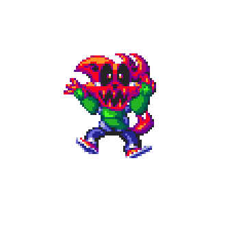

Game isn't near ready to show, so here's a short summery
Techno-Break is a indie game by ChrisFurry, attempting Sonic with Combat again. (In Godot)
Techno-Break will be 100% free and is being made for 0 profit, only made with pure love <3
If you would like to help out, you can dm me, and we can talk.